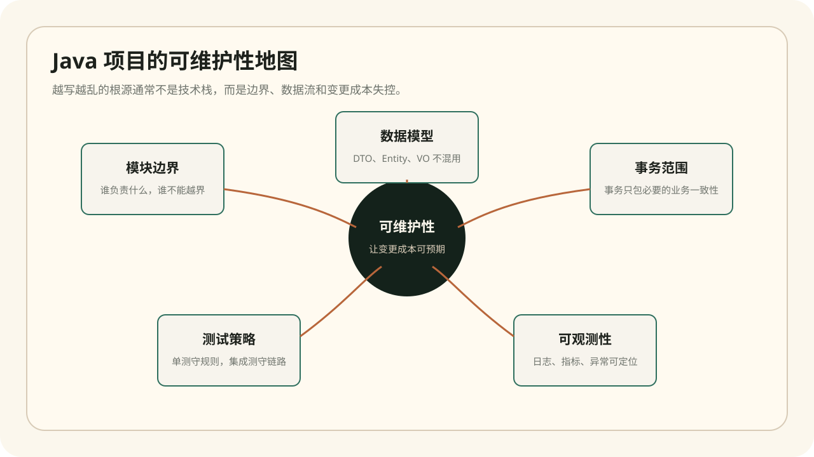
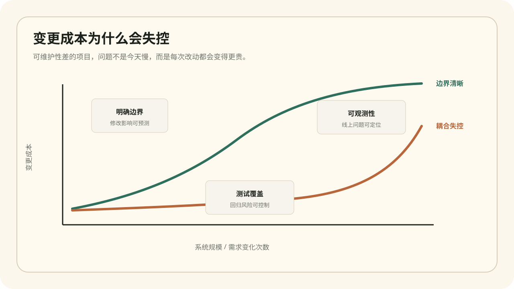

2026.04.18 · Java Architecture
Java 项目如何避免越写越乱
一个 Java 项目开始变乱，通常不是因为用了 Spring Boot，也不是因为没有微服务，而是因为边界、数据流、事务和测试没有形成稳定的工程秩序。真正难的不是写出第一版功能，而是半年后还能低成本地改、敢上线、能排查。

一、先保护模块边界，不要先追求抽象
很多项目越写越乱，是因为所有业务都能互相调用：订单服务直接改用户状态，控制器里拼装复杂业务，工具类慢慢变成万能垃圾桶。短期看开发很快，长期看每次改动都像拆雷。
边界的目标不是“分层好看”，而是让责任清晰。Controller 只处理协议和参数，Application Service 编排用例，Domain 或业务服务表达规则，Repository 负责持久化。哪怕项目不大，也要让每层知道自己不该做什么。
我更推荐的单体项目目录骨架
项目小的时候先保持单体，但边界要像未来可以拆一样清楚。这样不会过早微服务化，也不会把所有东西塞进一个 service。
src/main/java/com/example/order
├── api # Controller、Request、Response
├── application # 用例编排：取消订单、确认收货、退款申请
├── domain # 业务规则：订单状态机、金额校验、库存占用
├── infrastructure # DB、MQ、第三方支付、短信网关
└── support # 当前模块内部工具，不做跨模块万能工具箱目录只是表象，关键是依赖方向：api 可以调用 application，application 可以调用 domain 和 infrastructure 接口，domain 不应该反过来依赖 controller、mapper 或外部网关。只要依赖方向守住，项目就不容易在需求压力下坍成一团。
二、数据模型不要混用
Entity、DTO、VO、Command 混着用，是 Java 项目腐化的高发点。数据库实体被直接返回给前端，前端字段反过来影响数据库字段，接口为了兼容页面不断塞临时属性，最后一个类承载了三四种语义。
更稳的做法是：数据库 Entity 只表达持久化结构；DTO 表达接口传输；Command 表达一次业务动作；View Object 表达页面需要的展示结果。转换代码看起来多一点，但它换来的是边界清晰和演进自由。
不要让 Entity 穿透到接口层
// 不推荐：数据库结构直接暴露给前端
@GetMapping("/{id}")
public OrderEntity detail(@PathVariable Long id) {
return orderRepository.findById(id).orElseThrow();
}
// 更稳：接口返回的是页面契约，数据库怎么改不影响前端
@GetMapping("/{id}")
public OrderDetailResponse detail(@PathVariable Long id) {
Order order = orderQueryService.getDetail(id);
return OrderDetailResponse.from(order);
}| 模型 | 应该承载 | 不应该承载 |
|---|---|---|
| Entity | 数据库字段、持久化关系、必要的领域约束 | 前端展示字段、临时统计字段、第三方接口结构 |
| DTO | 接口输入输出结构、跨系统传输数据 | 数据库注解、复杂业务行为 |
| Command | 一次业务动作所需的最小输入 | 页面展示字段、历史兼容垃圾字段 |
三、事务范围要小，业务一致性要明确
事务不是越大越安全。把远程调用、文件上传、消息发送、复杂循环都包进一个大事务，会让锁时间变长，也会让失败恢复更困难。
判断事务范围时可以问三个问题：哪些数据必须同时成功？失败后能否重试？有没有外部副作用？如果一个动作涉及外部系统，通常要考虑本地事务 + 事件表 + 补偿机制，而不是指望一个数据库事务解决全部问题。
真实场景：订单支付后的库存和通知
假设支付成功后要扣库存、生成订单流水、发送站内信、推送短信。如果把这些动作全部放进一个事务，短信服务慢会拖垮数据库事务，短信失败还可能让订单状态回滚，最终业务语义反而混乱。
更稳的做法是把“订单状态和库存扣减”作为本地强一致事务，把“站内信和短信”放入事件或消息队列异步处理，并为失败补偿设计重试和告警。这样系统不会因为非核心副作用影响主链路，也更容易排查问题。
事务边界可以这样拆
@Transactional
public void markPaid(PaySuccessCommand command) {
Order order = orderRepository.getByNo(command.orderNo());
order.markPaid(command.paidAt());
inventoryService.confirmDeduction(order.items());
orderEventRepository.save(OrderEvent.paid(order.id()));
}
// 由定时任务或 MQ 消费者异步处理，失败可以重试和告警
public void handlePaidEvent(OrderPaidEvent event) {
messageService.sendStationNotice(event.orderId());
smsGateway.sendPaidMessage(event.mobile());
}
四、测试要覆盖规则和链路，而不是追求数字
测试覆盖率高不等于项目可靠。真正有价值的测试，应该覆盖业务规则、关键异常、数据转换和跨模块链路。不要把时间浪费在对 getter/setter 或无业务价值的薄包装做机械测试。
我的建议是：核心规则写单元测试，关键用例写集成测试，外部依赖用契约或 Mock 明确边界。每修一个线上 Bug，都补一个能复现问题的测试。这样测试集会自然长成项目的安全网。
| 测试类型 | 适合覆盖 | 一个真实例子 |
|---|---|---|
| 单元测试 | 状态机、金额计算、权限规则 | 订单已支付后不能取消，退款金额不能超过实付金额 |
| 集成测试 | Service + Repository + 事务 | 支付成功后订单状态、库存流水、事件表必须同时落库 |
| 契约测试 | 第三方接口和内部 API | 支付回调字段缺失时是否按约定返回失败 |
| 回归测试 | 线上 Bug 的最小复现 | 同一订单重复回调不能重复扣库存 |
测试命名要让人一眼看懂业务意图
@Test
void should_not_cancel_order_when_order_has_been_paid() {
Order order = OrderFixture.paidOrder();
assertThatThrownBy(() -> order.cancel("用户取消"))
.isInstanceOf(BusinessException.class)
.hasMessageContaining("已支付订单不能取消");
}五、日志和异常要为排查服务
线上问题最怕两种日志：一种是什么都没有，另一种是全是废话。好的日志应该回答：谁在什么时候做了什么，关键输入是什么，失败在哪一层，是否能关联到 traceId 或业务单号。
异常处理也不要只会 catch 后打印。业务异常、参数异常、外部系统异常、不可恢复异常应该分层处理。用户看到的是清晰提示，工程师看到的是可定位证据，系统看到的是可统计指标。
一条能救命的日志应该带业务主键
log.info("order paid event created, orderNo={}, orderId={}, amount={}, traceId={}",
order.getOrderNo(),
order.getId(),
order.getPaidAmount(),
TraceContext.currentTraceId());我最怕看到的日志是 `error happened`，其次是把整个对象无脑打出来。前者无法定位，后者可能泄露敏感信息。好的日志应该克制，但关键字段必须齐：业务单号、用户或租户标识、外部请求 ID、核心状态、失败原因。排查线上问题时，这些字段比一大段堆栈更值钱。
| 坏味道 | 短期表现 | 长期后果 |
|---|---|---|
| Service 互相随意调用 | 需求开发很快 | 循环依赖、事务边界混乱、修改影响不可预测 |
| 一个 DTO 到处复用 | 少写几个类 | 接口、页面、数据库字段被迫一起变化 |
| 异常统一吞掉 | 页面看起来不报错 | 线上问题没有证据，用户反馈变成唯一监控 |
可维护性检查清单：新增需求前，先判断要改哪些模块；提交前，看事务范围是否过大；上线前，确认关键链路有日志、异常有分类、核心规则有测试。
六、不要一上来就“大重构”
真实项目里，最容易失败的重构不是技术难，而是范围失控。看到旧系统一团乱时，不要立刻宣布“我要重构整个订单模块”。更稳的方式是把重构绑在正在交付的需求上：这次改退款，就先把退款用例的入口、模型和测试补齐；下次改取消订单，再把取消链路整理出来。
我会优先做三种低风险改进：把重复判断提成领域方法，把穿透层级的数据模型隔离掉，把线上 Bug 固化成测试。这些改动不花哨，但能逐步降低未来需求的变更成本。
结论
Java 项目的高级感不是架构图画得复杂，而是每次需求变化都能从容落地。边界清晰、模型分离、事务克制、测试有效、日志可查，这五件事做好，项目就不会轻易失控。